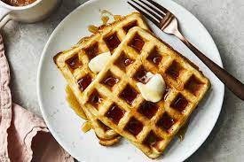

Waffles

A plate of waffles
Waffles are typically prepared by combining flour, sugar, baking powder, baking soda, and salt in a large mixing bowl.
In a separate bowl, milk, eggs, melted butter, and vanilla extract are whisked together until well combined.
The wet ingredients are then added to the dry ingredients, and the mixture is whisked until just combined, leaving some
lumps. This helps create a light and airy texture in the finished waffle.
Ingredients
- 2 cups all-purpose flour
- 1 tablespoon baking powder
- 1/2 teaspoon salt
- 2 eggs
- 1 1/2 cups milk
- 1/2 cup vegetable oil
- 1 teaspoon vanilla extract
Steps
- Preheat waffle iron.
- Whisk together flour, baking powder, and salt in a large bowl.
- In a separate bowl, whisk together eggs, milk, oil, and vanilla.
- Make a well in the center of the dry ingredients and pour in the wet ingredients. Stir until just combined.
- Grease waffle iron with cooking spray and pour batter onto the hot waffle iron. Cook until golden brown.